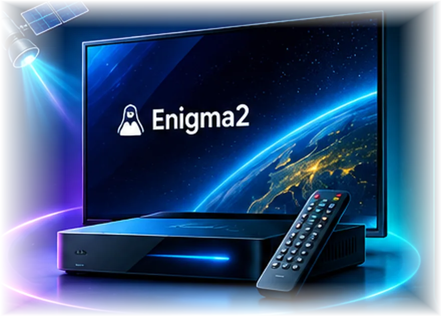

SYSTEMY ENIGMA2 · GOTOWE OBRAZY
Systemy Multi-Click
Wybierz model odbiornika, sprawdź zgodność i przejdź do właściwego systemu. Gotowe obrazy udostępniane przez zewnętrznego autora Multi-Click — nie są autorskimi projektami AIO Team.

◉ Zgemma / Octagon / Ustym✓ Dobór według modelu⚠ Wykonaj kopię ustawień przed zmianą image
WYBIERZ MODEL
Obrazy gotowe do pobrania
Wybieraj według producenta lub wpisz nazwę tunera. Pobieranie zewnętrzne pozostaje objęte dotychczasowymi zasadami strony.
Ładowanie listy systemów…
Nie wiesz, który system wybrać?
Smart Tuner →Najpierw sprawdź pełną nazwę modelu tunera. Instalowanie image przeznaczonego dla innego modelu może uniemożliwić uruchomienie urządzenia.